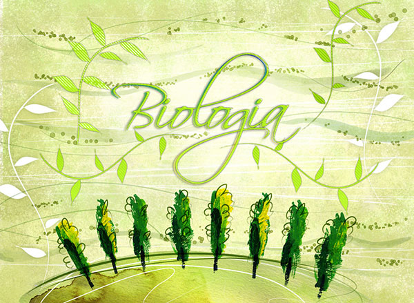

3G Convites
3G Convites fazia parte da 3º Graus formaturas e era responsável pelos convites para os formandos da empresa. Esse estágio foi minha primeira experiência profissional, que consistia basicamente na elaboração de layouts e diagramação de convites de formatura, além de esporadicamente atender os clientes.
Foi neste período que aprimorei minhas habilidades com Photoshop e principalmente o InDesign.

